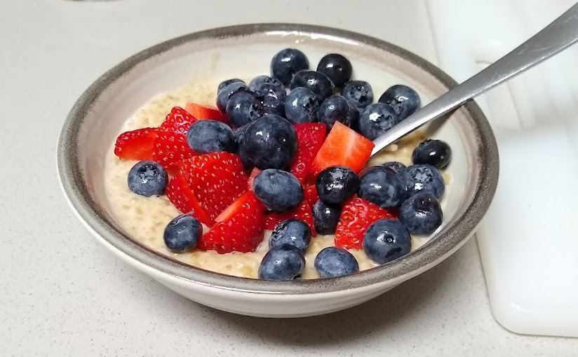

Breakfast Bowl

I eat this almost every morning for breakfast. It's fast, easy to make, and nutritious
Ingredients
- One apple
- Granola
- Homemade yogurt
Steps
- Cut apple into small cubes.
- Add one or two dollops of homemade yogurt.
- Sprinkle granola on top.
- Mix and enjoy.
Other resources